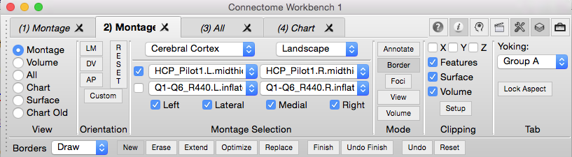
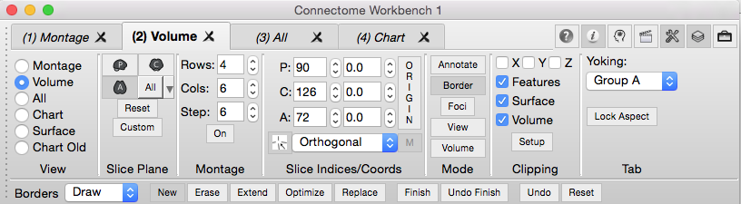
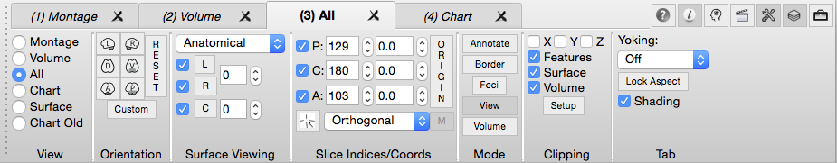
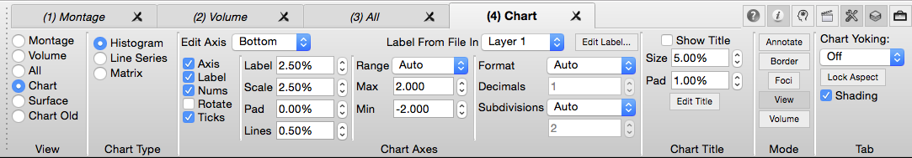
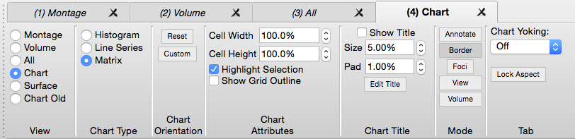
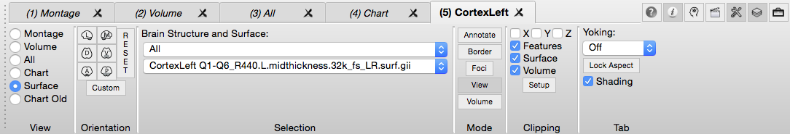
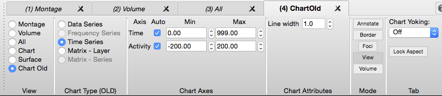
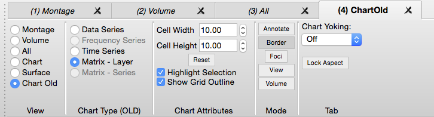

Toolbar
Toolbar is the section at the top of the Workbench
Window that contains viewing settings for the
structure you are displaying in the Active
Tab and access to
Workbench functional modes (border drawing, region of interest
definition, etc.).
- The Toolbar can be hidden or shown
using the
 button at the
top right of the Workbench Window or by clicking on
Toolbar in the View Menu.
button at the
top right of the Workbench Window or by clicking on
Toolbar in the View Menu.
- Tooltips
(available by hovering mouse over buttons/elements) are
an easy way to see information on the buttons and
functions on the Toolbar (or throughout wb_view).
Montage Toolbar
- Orientation contains buttons to
set orthogonal and User-defined views of the brain surface
displayed.
- Orthogonal view buttons are labeled: LM
(lateral-medial), DV (dorsal-ventral), AP
(anterior-posterior).
- Using the Mouse
Controls, in Montage view, rotation is
mirrored between hemisphere lateral/medial sides and panning
moves hemisphere sides together or away from each other.
- The Reset button resets the
orientation/zoom to the default.
- Custom
Orientation allows one to set and save (or
not) a specific transform (pan, rotate, oblique rotate,
zoom) for a surface or volume.
- Montage Selection contains
pull-downs and checkboxes to set the surface montage to view.
- Top Left pull-down sets the montage
structure: Cerebral Cortex, Cerebellar Cortex, or Flat. A
structure is only viewable if the appropriate surface is
loaded.
- Top Right pull-down sets the page
orientation of the surfaces displayed. Pull-downs in the
middle set the surface file for each hemisphere from the
list of loaded files. Up to 2 left and 2 right surfaces can
be displayed at once. The checkboxes indicate if the set
surfaces are being displayed.
- Left, Lateral, Medial,
and Right checkboxes indicate if these structures
are being displayed.
- Clipping
contains settings for cutting down Surface, Volume, or
Features data to be viewed.
Tab
contains cross-tab functions for yoking the display of two or more
Viewing Tabs and for locking aspect ratios (used with
annotations).

Volume Toolbar
- Slice
Plane contains buttons to set which volume slice planes
are displayed: P (parasagittal), C (coronal),
A (axial), All (all 3 planes).
- The Reset button resets the
orientation/zoom to the default.
- Custom
Orientation allows one to set and save (or
not) a specific transform (pan, rotate, oblique rotate,
zoom) for a surface or volume.
- The crosshair button (large '+' symbol)
enables the drawing of crosshairs, representing the selected
slices.
- The crosshair labels button enables
drawing labels indicating the orientation of the viewed
slice.
- Montage contains settings for
viewing multiple volume slices from a single slice plane at
once. Rows/Cols set the number of Rows or
Columns of slices to display. Step sets the index
spacing between slices in the volume slice montage.
- Slice Indices/Coords
contains
settings for the slice index and stereotaxic (Talairach)
coordinate to be viewed for each slice plane.
- The vertical Origin button
rests the slice indices to the default (centered at the
AC).
- The
 button (default on)
activates movement of the crosshairs/volume slice to the same
plane as the brainordinate selected in any of the Viewing
Tabs in the same yoking group as the Volume tab.
button (default on)
activates movement of the crosshairs/volume slice to the same
plane as the brainordinate selected in any of the Viewing
Tabs in the same yoking group as the Volume tab.
- The pull-down at the bottom toggles
between Orthogonal and Oblique volume
viewing.
- The button at the left enables the
slices to move to the brainordinate of an identification
operation (mouse click on a volume slice or a surface.
- The "M" button at the right selects
masking during oblique viewing. In oblique viewing,
cubic interpolation is used which may cause edge effects and
masking will remove these edge effects.
- Clipping
contains settings for cutting down Surface, Volume, or
Features data to be viewed.
- Tab
contains cross-tab functions for yoking the display of two or
more Viewing Tabs and for locking aspect ratios (used with
annotations).

All Toolbar
- Orientation contains buttons to
set orthogonal and User-defined views of the brain
surfaces/volume displayed.
- Orthogonal view buttons are labeled: L
(left), R (right), D (dorsal), V
(ventral), A (anterior), and P
(posterior).
- The Reset button resets the
orientation/zoom to the default.
- Custom
Orientation allows one to set and save (or
not) a specific transform (pan, rotate, oblique rotate,
zoom) for a surface or volume.
- Surface Viewing contains
pull-downs and check-boxes to set the surfaces to view: L
(left hemisphere), R (right hemisphere), C
(cerebellum).
- The top pull-down menu changes the type
of surface: Anatomical, Inflated or Very Inflated.
- The check-boxes to the left of the L, R
and C turn on/off the display of that structure.
- To change the structure's surface file,
click on the L, R or C button and a list of loaded files
will appear for selection.
- The scroll boxes
to the right, control the spacing between left and right
hemispheres (relative to anatomical spacing = 0) and the
spacing of the cerebellum away from the cortex.
- Slice Indices/Coords
contains toggles to turn off/on volume planes (P =
parasagittal, C = coronal, A = axial) and
settings for the slice index and stereotaxic (Talairach)
coordinate to be viewed.
- The vertical Origin button
rests the slice indices to the default (centered at the
AC).
- The button (default on)
activates movement of the crosshairs/volume slice to the same
plane as the brainordinate selected in any of the Viewing
Tabs in the same yoking group as the All tab.
- The pull-down at the bottom toggles
between Orthogonal and Oblique volume
viewing.
- Clipping
contains settings for cutting down Surface, Volume, or
Features data to be viewed.
- Tab
contains cross-tab functions for yoking the display of two
or more Viewing Tabs and for locking aspect ratios (used with
annotations).

Histogram and Line Series Chart Toolbar
Chart Type selects the type of chart
displayed in the tab. Both Histogram and Line-Series charts
use the same toolbar.
Chart Axes contains controls for setting axes' attributes.
- Edit Axis Selection - Selects the
axis (Left, Bottom, Right) for editing
- Label from File In selection - A
label is displayed in the axis (eg: counts, data, etc.) and
this label is a property of a file. Since there may be
more than one layer, use this control to choose the layer and
the label displayed is from the file in the selected layer.
- Edit Label... Pops up a dialog for
editing the text in the axis' label.
- Axis Checkbox - Turns display of
the entire axis on of off.
- Label Checkbox - Turns display of
the label on or off.
- Nums Checkbox - Turns display of
the numeric values in the axis on or off.
- Rotate Checkbox - When checked,
the label is rotated so that the text is oriented bottom to
top (rotated 90 degrees).
- Ticks Checkbox - Turns display of
the axis tick marks on or off.
- Label Size - Controls the height
of the label's text characters as a percentage of the tab's
graphics region height.
- Scale Size - Controls the width (left
or right axis) or height (bottom axis) axis as a percentage
of the tab's graphics region height.
- Pad Size - Controls the height of
the label's text characters as a percentage of the tab's
graphics region height.
- Lines Size- Controls the height of the label's text
characters as a percentage of the tab's graphics region
height.
- Range Mode - Chooses the range of
the axis. Auto extends the range of the axis to beyond
the data's minimum and maximum values so that, in most cases,
whole numbers are displayed. Data sets the axis range to
the exact range of the data. User allows the user to set
the minimum and maximum of the data displayed.
- Max (Range) Value - The minimum
value in the axis.
- Min (Range) Value - The maximum
value in the axis.
- Format - Controls format of the
numerical values in the axis. Decimal displays the
numerical values using a decimal format (eg: -1.8, 2,
etc). Scientific displays the numerical values using
scientific notation (eg: 1.32e-2; -2.5e+3; etc.) Auto
chooses a format to best display the values from either
Decimal or Scientific.
- Decimals - When the Format is
Decimal or Scientific, this controls the number of digits
right of the decimal point.
- Subdivisions - Subdivisions is the
number of numeric values between the minimum and maximum
values. Auto sets the number number of subdivisions
appropriate for the data. User allows the user to set
the number of subdivisions using the numerical value below
Auto/User.
Chart Title contains controls for the
display of a title above the chart.
- Show Title Checkbox - Turns
display of the title on or off.
- Size Value - Sets the size of the
label's text as a percentage of the tab's graphics region
height.
- Pad Value - Sets the size of the
space between the edge of the tab's graphics region and the
top of the text.
- Edit Title button - Displays a
dialog for editing the title's text.
Mode
contains buttons for switching between Viewing
Area mouse controls for performing actions
including Border
drawing and Foci
creation or typical View mode.
Tab
contains cross-tab functions for yoking the display of two or
more Viewing Tabs
and for locking aspect ratios (used with annotation

Matrix Chart Toolbar
Chart Type selects
the type of chart displayed in the tab.
Chart Orientation contains buttons to set
orthogonal and User-defined views of the brain surfaces/volume
displayed.
- Reset button resets the view of
the matrix to remove any panning and zooming (shift-drag mouse
to pan matrix, command-drag mouse to zoom).
- Custom button allows one to create
or use an existing custom orientation.
Chart Attributes
- Cell Width - Scales the width of
the cells to be larger or smaller.
- Cell Height - Scales the height of
the cells to be larger or smaller.
- Highlight Selection - If a
row is selected in the matrix, row is highlighted with an
outline. The color of the outline is set on the
Preferences' Colors tab.
- Show Grid Outline -
Displays a grid with lines at the horizontal and vertical cell
boundaries. The color of the grid lines is set on the
Preferences' Colors tab.
Chart Title
contains controls for the display of a title above the chart.
Show Title Checkbox - Turns display
of the title on or off.
Size Value - Sets the size of the
label's text as a percentage of the tab's graphics region
height.
Pad Value - Sets the size of the
space between the edge of the tab's graphics region and the top
of the text.
Edit Title button - Displays a dialog
for editing the title's text.

Surface Toolbar
- Orientation contains buttons to
set orthogonal and User-defined views of the brain surface
displayed: L (lateral), M (medial), D (dorsal),
V (ventral), A
(anterior), and P (posterior).
- The Reset button resets the
orientation/zoom to the default.
- Custom
Orientation allows one to set and save (or
not) a specific transform (pan, rotate, oblique rotate,
zoom) for a surface or volume.
- Selection contains pull-downs to
set the brain structure (top) and surface (bottom) to view.
- Clipping
contains settings for cutting down Surface, Volume, or
Features data to be viewed.
Tab
contains cross-tab functions for yoking the display of two or more
Viewing Tabs and
for locking aspect ratios (used with annotations).

Line Series Old Chart Toolbar
Chart Type (Old),
determines which kind of chart is viewed. If one or more
Workbench-chartable files are loaded, one or more Chart Types
will be available for selection. Chartable files for the
selected Chart Type are listed and can be selected for display
in the Overlay Toolbox Charting
tab.
Chart Types currently available:
Data/Time
Series (top image) chartable files are graphed
for a brainordinate identified in a non-Chart view Viewing Tab,
showing a data value (y-axis) for each Map Index/unit of time
(x-axis). The following file types are available for Data/Time
Series charting, as long as they contain more than one
map:
*
CIFTI
Data Series (.dtseries.nii)
*
CIFTI Parcel Scalar (.pscalar.nii)
*
CIFTI Parcel Series (.ptseries.nii)
*
CIFTI Scalar (.dscalar.nii)
*
Metric (.func.gii, .shape.gii)
*
Volume (.nii, .nii.gz)
Matrix
(bottom image) chartable files:
*
CIFTI Parcel to
parcel connectivity (.pconn.nii) -- matrix
with parcels as the y-axis rows, parcels as the x-axis
columns, and the colored cells indicate the correlation
(connectivity) values between the parcel pair.
*
CIFTI Parcel Scalar (.pscalar.nii) -- matrix
with parcels as the y-axis rows, map indices as the x-axis
columns, and the colored cells indicate the scalar data value
for a parcel/map pair in a particular parcel
(identified in a non-Chart view Viewing Tab).

Matrix Old Chart Toolbar
